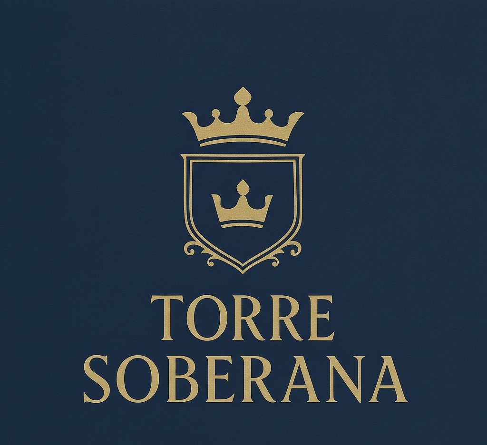
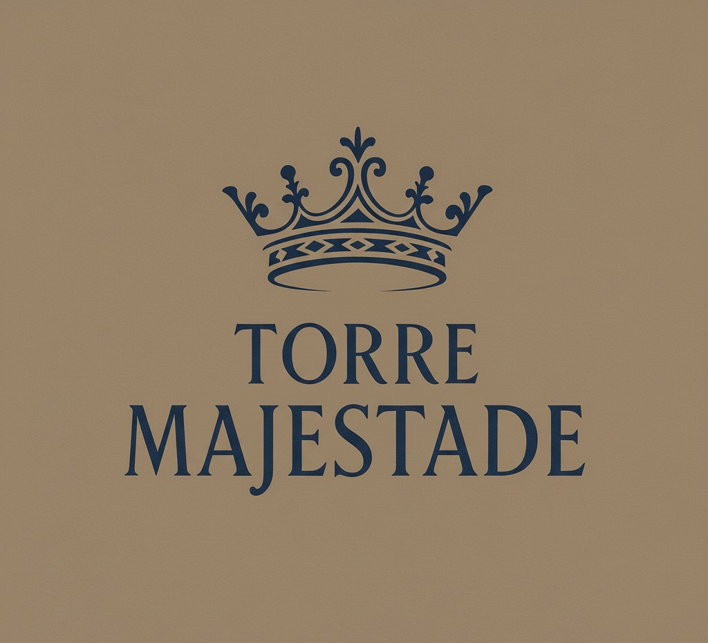

A tradição renasce em sofisticação
No endereço histórico da Mansão 888, nasce um residencial boutique vertical com plantas generosas, lazer exclusivo e acabamentos atemporais.
Residencial Boutique Vertical
O Maison 888 redefine a experiência de viver em Feira de Santana, trazendo para Santa Mônica um empreendimento singular, inspirado na lendária Mansão 888, palco de grandes encontros e festas memoráveis da cidade. São 2 torres independentes com 62 metros de altura, fachadas modernas e atemporais, todos os cômodos varandados e um conceito arquitetônico que alia sofisticação, ventilação cruzada e iluminação natural.
Um dos grandes diferenciais é que o primeiro pavimento residencial já se encontra na altura equivalente ao 6º andar, garantindo vistas privilegiadas, mais privacidade e a sensação permanente de viver em um nível superior.
Os apartamentos variam de 182 a 486 m², com tipologias de 3 e 4 suítes por andar e coberturas exclusivas de até 5 suítes (486,43 m²), as primeiras de alto padrão em Feira de Santana. Todas as unidades possuem varandas generosas, integração entre sala, cozinha e varanda, hall privativo com elevador social exclusivo, depósito individual e vagas proporcionais ao número de suítes.
No PUC – Pavimento de Uso Comum, o lazer é pensado no conceito boutique, reunindo o máximo em exclusividade:
- Piscina, solarium e hidro
- Sauna, massagem e lounge
- Academia completa, coworking e mercado
- Espaço gourmet, bar, grill e salão de festas
- Quadras (beach tennis e poliesportiva)
- Espaço infantil, playground e pet park
Além disso, o projeto entrega paisagismo autoral, ambientes prontos com revestimentos e metais de alto padrão, infraestrutura para energia solar, pontos de recarga para carros elétricos e sistemas de automação e segurança de última geração.
Condições de lançamento: entrada facilitada.
As Nossas Torres
Cada torre do Maison 888 foi batizada com um nome que reflete a grandiosidade e a exclusividade do empreendimento, criando uma atmosfera de realeza e sofisticação para seus moradores.
Torre Soberana
Inspirada na realeza e no comando, a Torre Soberana representa a imponência e o status de seus moradores.
Torre Majestade
Um nome que evoca nobreza e distinção, a Torre Majestade oferece um lar digno de uma vida excepcional.
Vídeo de Apresentação
Conheça cada detalhe do Maison 888.